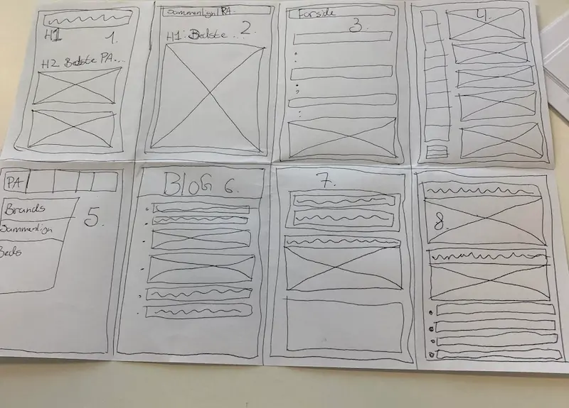
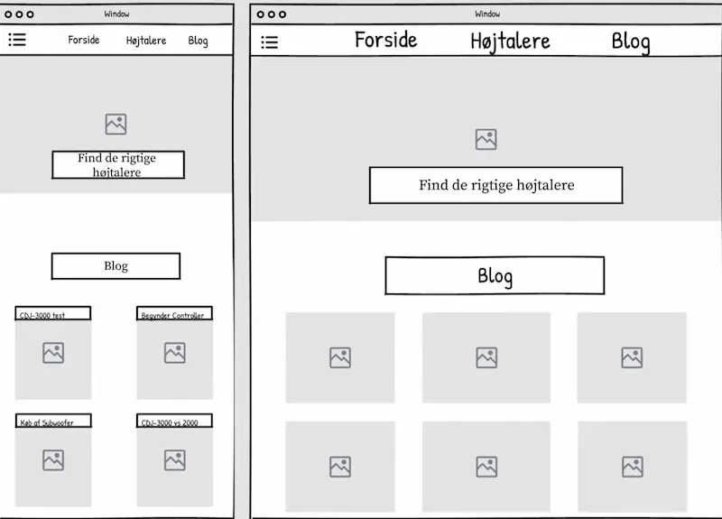
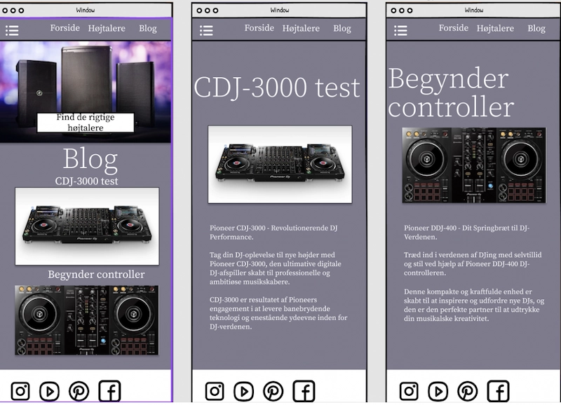
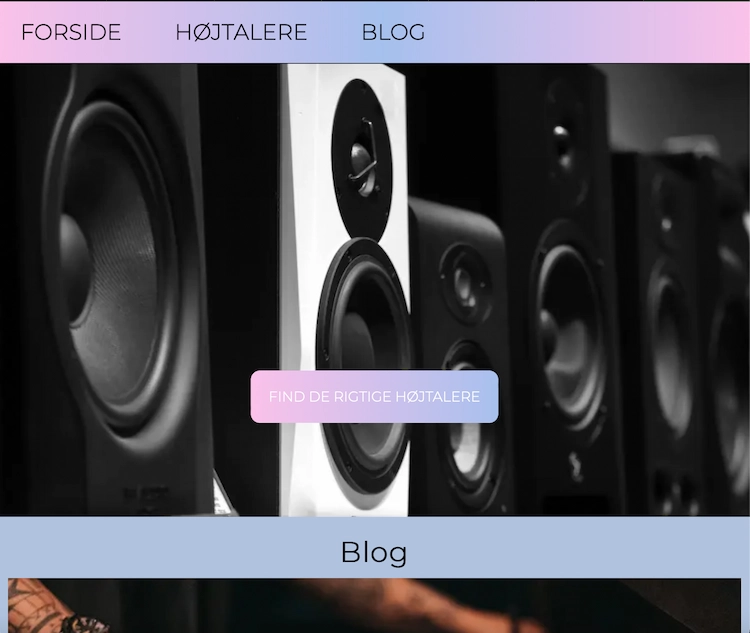

Grundlæggende UX/UI
Tema 3 arbejder videre med digitale brugergrænseflader, men med større fokus på samspillet mellem brugere og grænseflader, samt hvilke teorier, værktøjer og metoder der kan bruges til research, design og test.
Jeg har helt konkret blandt andet arbejdet med idéudvikling, prototyper, user stories og 5-sekunders test.
03.04.01 Præsentation
I denne opgave skulle vi udfra lærte præsentationsteknikker formidle vores løsning og process for en gruppe medstuderende.
For at løse denne opgave lavede jeg en powerpoint som jeg kunne præsentere udfra, og som følger lærte teori om, hvordan man fanger og fastholder seerens interesse.
03.04.02 Dokumentation
I denne opgave skulle vi løbende lave en processdokumentation af vores arbejde. Jeg har udvalgt insigter fra min research samt dele af designprocessen.
Her har jeg i høj grad lært vigtigheden af at have god dokumentation af mit arbejde, samt at udvælge relevante processer for bedst muligt at præsentere mit arbejde.
Det sværeste har været at udvælge det, der var mest relevant.
Indsigter fra research
Interviews af etablerede DJ's, samt observation af kunder i Hi-Fi-klubben. Indsigter er brugt til viderearbejde.
Indsigter fra interview
- Der laves research hjemmefra på store køb, som f.eks højtalere.
- Det er svært at finde rundt i diverse online fora - mere overblik ville være fedt.
Indsigter fra observation
- Der lægges stor vægt på prof. meninger fra butikker.
- Mange vil gerne hjem og tænke - de køber ikke med det samme.
Designprocess
Crazy 8
Wireframe
Prototype
Her ses den færdige prototype, som følger ovenstående wireframe.
Prototypen adskiller sig fra wireframet ved at den har de endelige farver, samt at den er klikbar.
Endeligt produkt
Her ses det endelige produkt. Som man kan se, adskiller farverne sig en del fra min prototype. Dette kommer af, at jeg blev lidt fanget af sjove farver og gradient effekter.
Set i bakspejlet var det ikke særlig smart, fordi der knytter sig en del designteori til farvevalg, som jeg nu har svært ved at anvende i en argumentation - tilgengæld blev jeg dygtig til gradient effekter.
